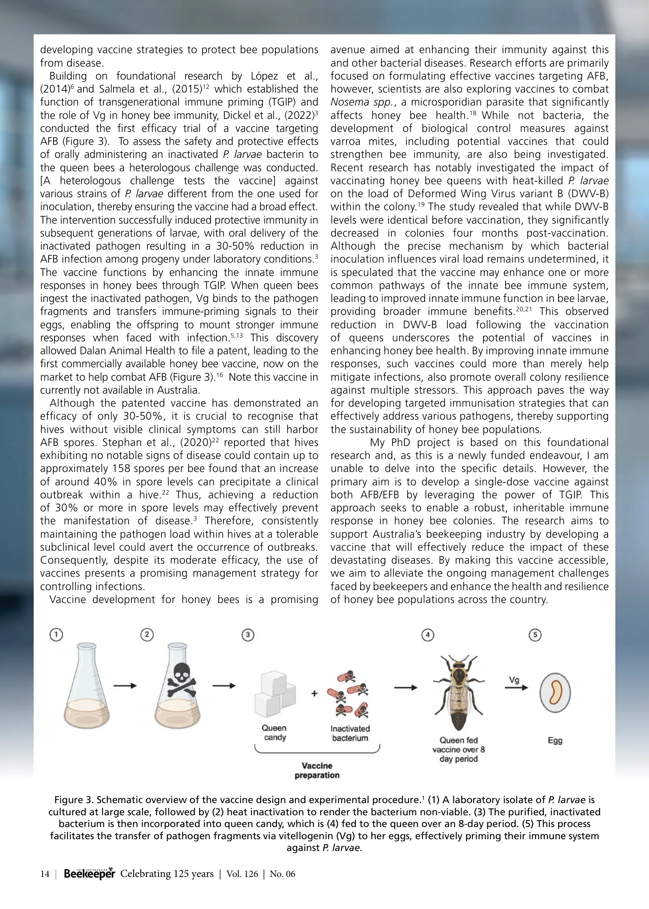

developing vaccine strategies to protect bee populations
from disease.
Building on foundational research by López et al.,
(2014)6 and Salmela et al., (2015)12 which established the
function of transgenerational immune priming (TGIP) and
the role of Vg in honey bee immunity, Dickel et al., (2022)3
conducted the first efficacy trial of a vaccine targeting
AFB (Figure 3). To assess the safety and protective effects
of orally administering an inactivated P. larvae bacterin to
the queen bees a heterologous challenge was conducted.
[A heterologous challenge tests the vaccine] against
various strains of P. larvae different from the one used for
inoculation, thereby ensuring the vaccine had a broad effect.
The intervention successfully induced protective immunity in
subsequent generations of larvae, with oral delivery of the
inactivated pathogen resulting in a 30-50% reduction in
AFB infection among progeny under laboratory conditions.3
The vaccine functions by enhancing the innate immune
responses in honey bees through TGIP. When queen bees
ingest the inactivated pathogen, Vg binds to the pathogen
fragments and transfers immune-priming signals to their
eggs, enabling the offspring to mount stronger immune
responses when faced with infection.5,13 This discovery
allowed Dalan Animal Health to file a patent, leading to the
first commercially available honey bee vaccine, now on the
market to help combat AFB (Figure 3).16 Note this vaccine in
currently not available in Australia.
Although the patented vaccine has demonstrated an
efficacy of only 30-50%, it is crucial to recognise that
hives without visible clinical symptoms can still harbor
AFB spores. Stephan et al., (2020)22 reported that hives
exhibiting no notable signs of disease could contain up to
approximately 158 spores per bee found that an increase
of around 40% in spore levels can precipitate a clinical
outbreak within a hive.22 Thus, achieving a reduction
of 30% or more in spore levels may effectively prevent
the manifestation of disease.3 Therefore, consistently
maintaining the pathogen load within hives at a tolerable
subclinical level could avert the occurrence of outbreaks.
Consequently, despite its moderate efficacy, the use of
vaccines presents a promising management strategy for
controlling infections.
Vaccine development for honey bees is a promising
avenue aimed at enhancing their immunity against this
and other bacterial diseases. Research efforts are primarily
focused on formulating effective vaccines targeting AFB,
however, scientists are also exploring vaccines to combat
Nosema spp., a microsporidian parasite that significantly
affects honey bee health.18 While not bacteria, the
development of biological control measures against
varroa mites, including potential vaccines that could
strengthen bee immunity, are also being investigated.
Recent research has notably investigated the impact of
vaccinating honey bee queens with heat-killed P. larvae
on the load of Deformed Wing Virus variant B (DWV-B)
within the colony.19 The study revealed that while DWV-B
levels were identical before vaccination, they significantly
decreased in colonies four months post-vaccination.
Although the precise mechanism by which bacterial
inoculation influences viral load remains undetermined, it
is speculated that the vaccine may enhance one or more
common pathways of the innate bee immune system,
leading to improved innate immune function in bee larvae,
providing broader immune benefits.20,21 This observed
reduction in DWV-B load following the vaccination
of queens underscores the potential of vaccines in
enhancing honey bee health. By improving innate immune
responses, such vaccines could more than merely help
mitigate infections, also promote overall colony resilience
against multiple stressors. This approach paves the way
for developing targeted immunisation strategies that can
effectively address various pathogens, thereby supporting
the sustainability of honey bee populations.
My PhD project is based on this foundational
research and, as this is a newly funded endeavour, I am
unable to delve into the specific details. However, the
primary aim is to develop a single-dose vaccine against
both AFB/EFB by leveraging the power of TGIP. This
approach seeks to enable a robust, inheritable immune
response in honey bee colonies. The research aims to
support Australia’s beekeeping industry by developing a
vaccine that will effectively reduce the impact of these
devastating diseases. By making this vaccine accessible,
we aim to alleviate the ongoing management challenges
faced by beekeepers and enhance the health and resilience
of honey bee populations across the country.
Figure 3. Schematic overview of the vaccine design and experimental procedure.1 (1) A laboratory isolate of P. larvae is
cultured at large scale, followed by (2) heat inactivation to render the bacterium non-viable. (3) The purified, inactivated
bacterium is then incorporated into queen candy, which is (4) fed to the queen over an 8-day period. (5) This process
facilitates the transfer of pathogen fragments via vitellogenin (Vg) to her eggs, effectively priming their immune system
against P. larvae.
14 |
Celebrating 125 years | Vol. 126 | No. 06